Miraculous Online Music Store HTML Template
Four ready-made music website designs in one download, on Bootstrap 4 and Bootstrap 5. Open a folder, replace the demo content with yours and publish.
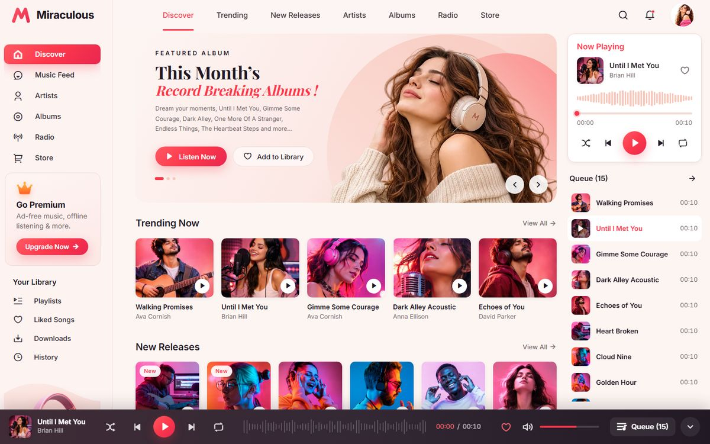
Thank you for purchasing Miraculous. This page explains what is inside the package, how to start, how each version is built and how to change colours, songs and images. If something is not covered here, see Support.
4 designs
Versions 1, 2, 3 and the new Version 4. Each one is a complete, stand-alone website.
2 Bootstrap builds
Bootstrap 4: Versions 1 and 2. Bootstrap 5: Versions 1, 2, 3 and 4.
Working music player
Demo songs are included, so the player works straight after you open a page.
Quick start
- Choose a design. Look at the version overview and decide which design and which Bootstrap version you want.
- Open it. Go to
html/Bootstrap5/version4/(for example) and openindex.htmlin your browser. No installation or build step is needed. - Upload it. Copy only the version folder you chose to your web server (FTP or hosting file manager). Every version has its own assets files, so you can delete the others.
- Make it yours. Change colours, texts, songs and images. See the section of your version below.
Good to know: the demo pictures are placeholders loaded from the internet (dummyimage.com), so they appear only when you are online. The songs and the code files are inside the package and work offline. See Placeholder images.
Choose your version
All versions have a music player, a registration / login form and the same kind of pages. They differ in design, in the Bootstrap version and in how they are built.
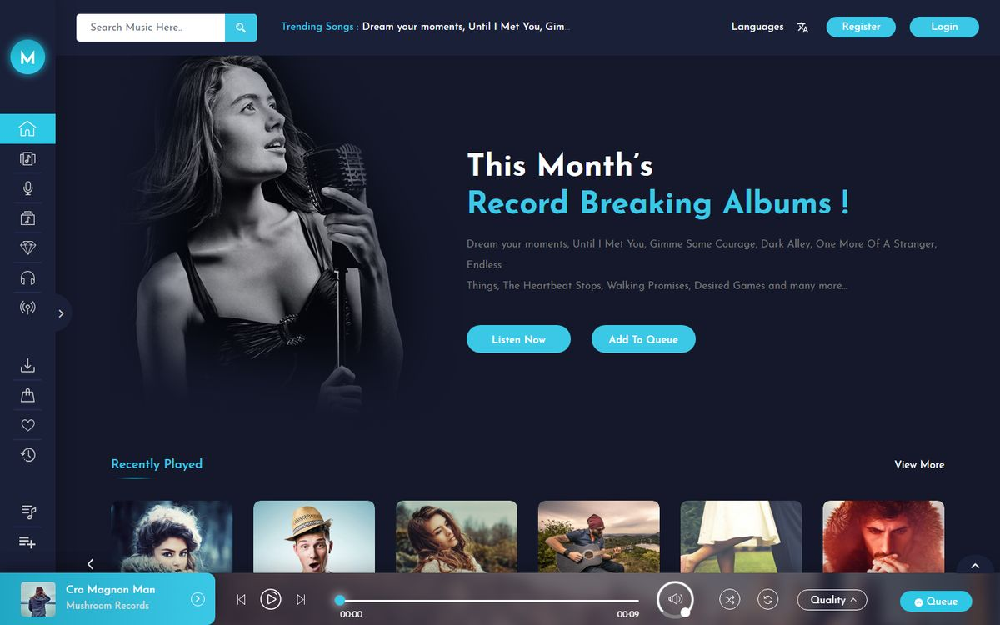
Version 1
Dark navy design with a cyan accent, side icon menu and a bottom player. Bootstrap 4 and 5.
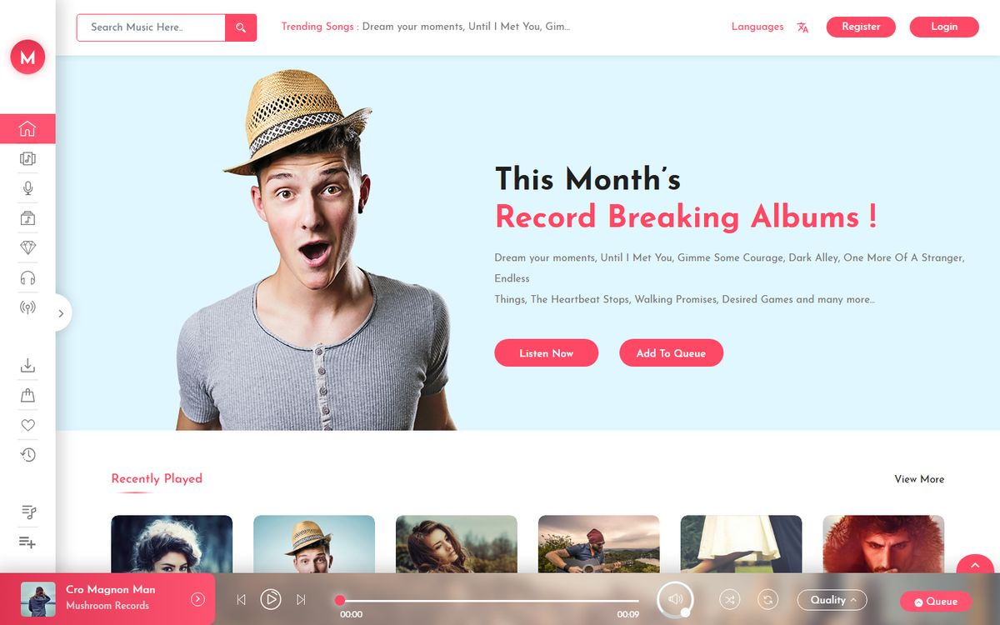
Version 2
The light twin of Version 1, with a pink accent on a white background. Bootstrap 4 and 5.
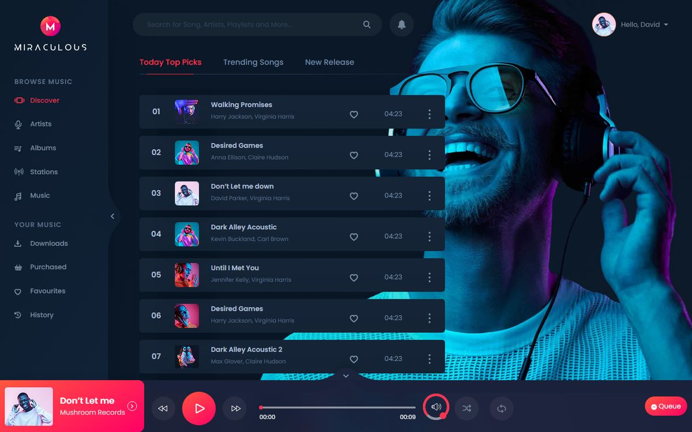
Version 3
Dark design with a wide sidebar, a song list and large cover cards. Bootstrap 5.
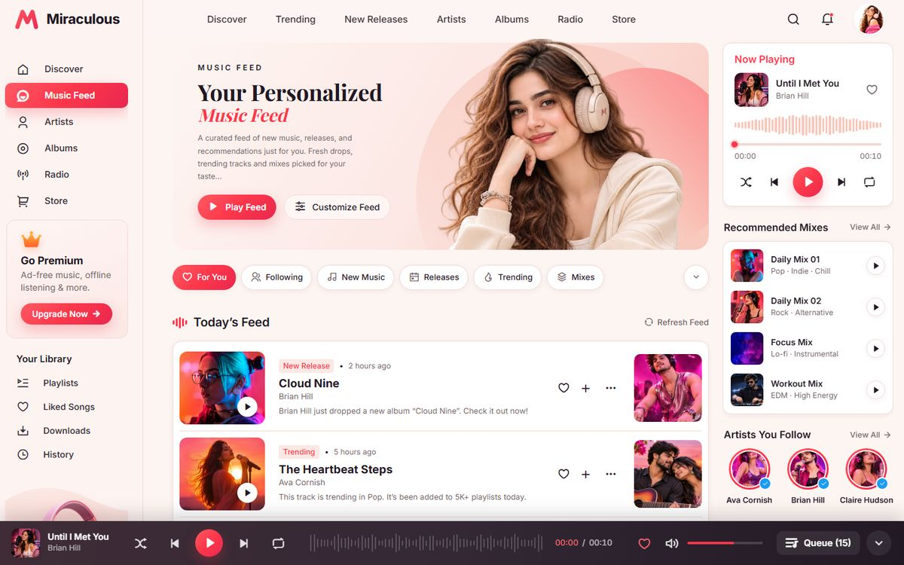
Version 4
Modern editorial design with a player that keeps playing between pages. Bootstrap 5.3, no jQuery.
| Version 1 | Version 2 | Version 3 | Version 4 | |
|---|---|---|---|---|
| Style | Dark | Light | Dark | Light, editorial |
| Pages | 21 | 21 | 10 | 28 |
| Bootstrap 4 folder | Yes | Yes | No | No |
| Bootstrap 5 folder | Yes | Yes | Yes | Yes (5.3.3) |
| jQuery | Yes | Yes | Yes | No |
| Music player | jPlayer | jPlayer | jPlayer | Own script, keeps playing between pages |
| Main font | Josefin Sans | Josefin Sans | Poppins | Inter and Playfair Display |
| Icons | Font Awesome 4.7 | Font Awesome 4.7 | Font Awesome 4.7 | Remix Icon 4.3 |
Looks the same in both builds. The Bootstrap 4 and the Bootstrap 5 folder of Version 1 (and of Version 2) show the same design. Only the Bootstrap version underneath is different. Not sure which to use? See Bootstrap 4 or 5?
Package folders
Help Documentation/ this documentation
html/
Bootstrap4/
version1/ dark design (Bootstrap 4.1)
version2/ light design (Bootstrap 4.1)
Bootstrap5/
version1/ dark design (Bootstrap 5.1)
version2/ light design (Bootstrap 5.1)
version3/ dark sidebar (Bootstrap 5.1)
version4/ new design (Bootstrap 5.3)Inside a version folder you find the HTML pages and the files they use:
| Where | Bootstrap 4 folder | Bootstrap 5 folder |
|---|---|---|
| HTML pages | version1/*.html | version1/*.html |
| Styles | css/ | assets/css/ |
| Scripts | js/ | assets/js/ |
| Images and icons | images/ | assets/images/ |
| Fonts | fonts/ | assets/fonts/ |
| Demo songs | audio/ | assets/audio/ |
Version 1
Dark21 pagesDark navy design with a cyan accent colour, a slim icon menu on the left, a search bar on top and a player bar at the bottom.
- Location
html/Bootstrap4/version1/andhtml/Bootstrap5/version1/- Open
index.html- Built with
- Bootstrap, jQuery 3.6, jPlayer 2.9, Swiper 4, Nice Select, Custom Scrollbar, Font Awesome 4.7
- Font
- Josefin Sans (files in the fonts folder, loaded by
fonts.css) - Accent colour
#3bc8e7
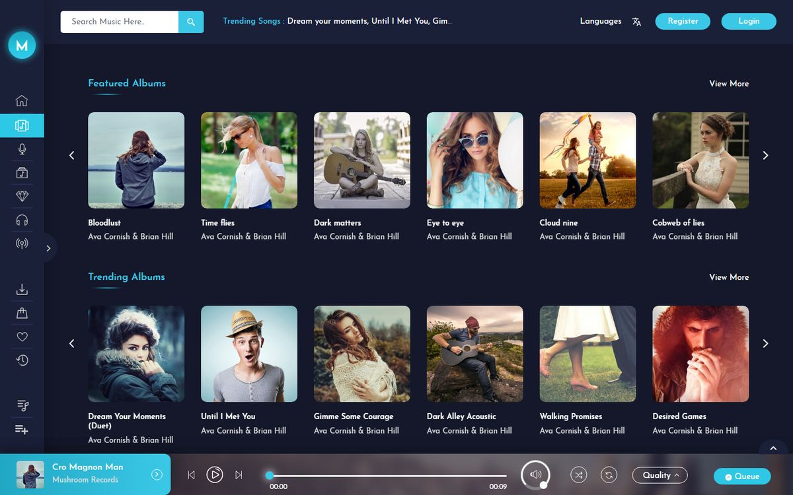
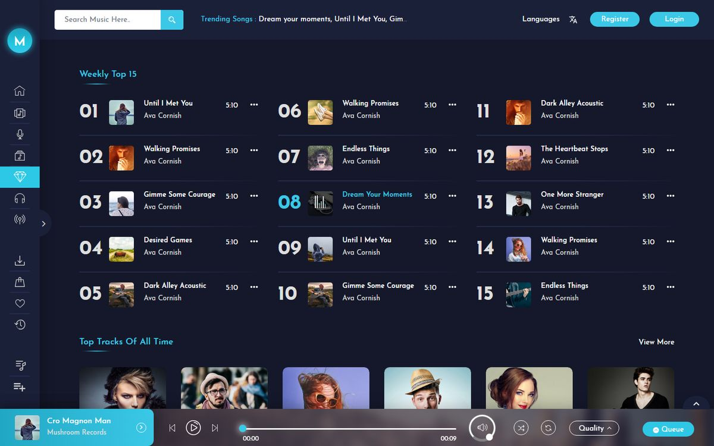
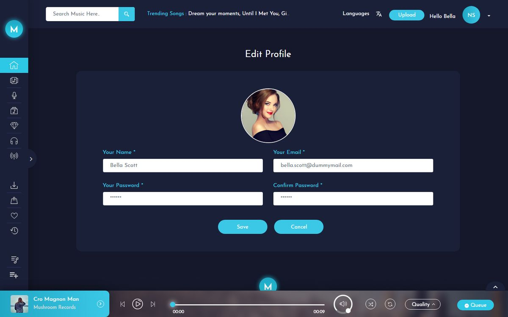
Pages
Version 1 and Version 2 have the same 21 pages.
| Page | What it shows |
|---|---|
| index.html | Home page |
| album.html, album_single.html | Album list and album detail |
| artist.html, artist_single.html | Artist list and artist detail |
| genres.html, genres_single.html | Genre list and genre detail |
| top_track.html, free_music.html | Top tracks and free music |
| stations.html | Radio stations |
| feature_playlist.html, add_playlist.html | Featured playlist and create-a-playlist |
| favourite.html, history.html, download.html, purchase.html | User library: liked songs, history, downloads, purchases |
| profile.html, manage_acc.html, upload.html | Profile, pricing plans / account, upload music |
| blog.html, blog_single.html | Blog list and post |
Change the colours
Colours are written directly in style.css (no variables). Open the file and use Find and replace:
#3bc8e7 main accent colour (buttons, links, highlights)
#14182a page background
#1b2039 panels, header and sidebar
#252b4d lighter panels and linesTip. A few gradients use rgb() values. Search for 59, 200, 231 and 59,200,231 to find the same colour written that way.
Songs, volume and player
- The player and its song list are defined in
js/plugins/player/audio-player.js(Bootstrap 5 folder:assets/js/plugins/player/audio-player.js). Version 1 has 13 demo tracks. See Use your own songs. - Click a play icon on a song or card and the player plays the track with the same position in the list.
- The volume knob turns between mute and full volume and stops at both ends.
- The sign-up, login, language and playlist windows are Bootstrap modals. They use
data-togglein the Bootstrap 4 folder anddata-bs-togglein the Bootstrap 5 folder.
Version 2
Light21 pagesThe light twin of Version 1: same pages and same structure, with a white background and a pink accent.
- Location
html/Bootstrap4/version2/andhtml/Bootstrap5/version2/- Open
index.html- Built with
- Same as Version 1
- Accent colour
#ff4865
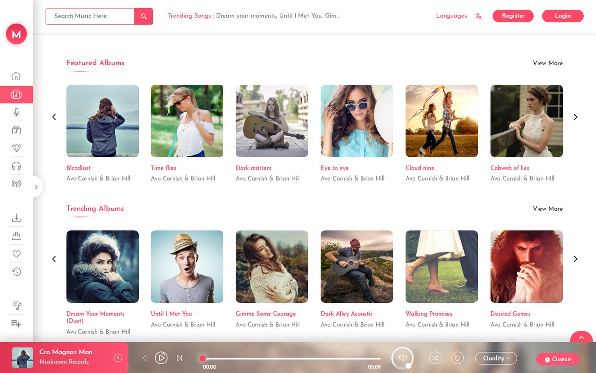
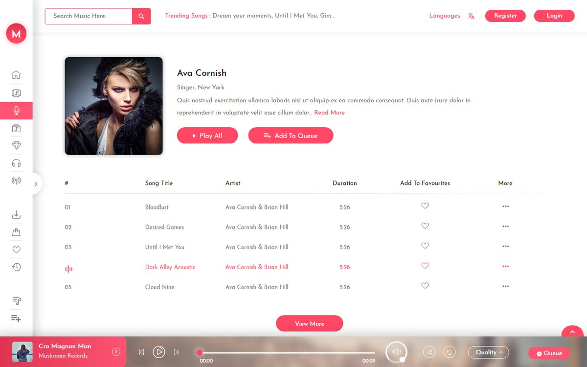
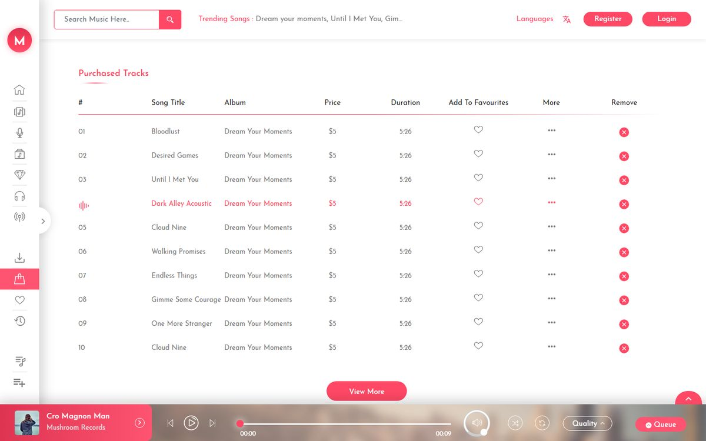
Change the colours
#ff4865 main accent colour
#202020 headings and dark text
#252b4d dark panelsThe page list, the player, the songs and the modals work exactly as described for Version 1.
Version 3
Dark10 pagesDark design with a sidebar menu, a top-picks song list and album sliders. A smaller version with the main pages only.
- Location
html/Bootstrap5/version3/(Bootstrap 5 only)- Open
index.html- Built with
- Bootstrap 5.1, jQuery 3.6, jPlayer 2.9, Swiper 4, Nice Select, Custom Scrollbar, Font Awesome 4.7
- Font
- Poppins
- Colours
- Page background
#0b1828, text#33455a, accent gradientrgb(255,85,62)torgb(255,0,101)
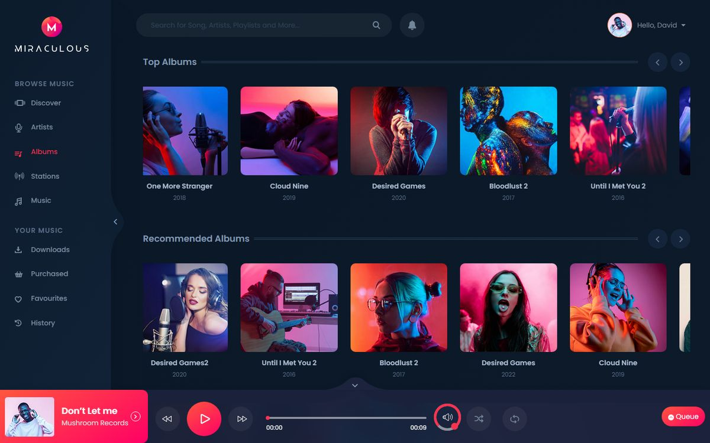
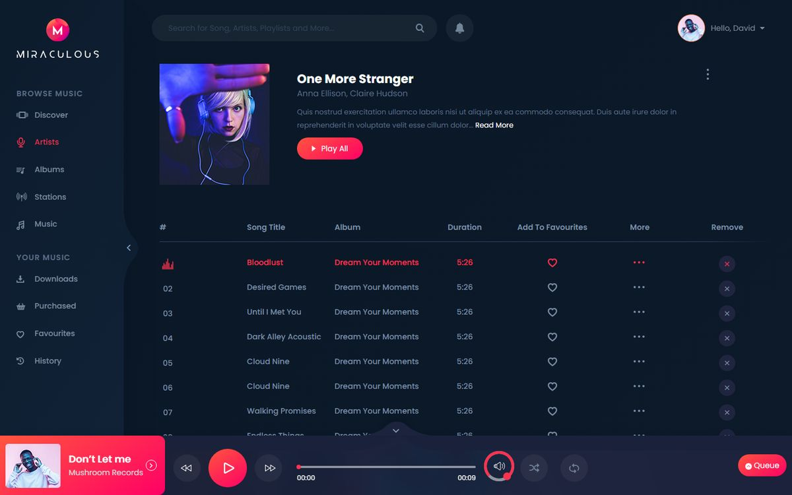
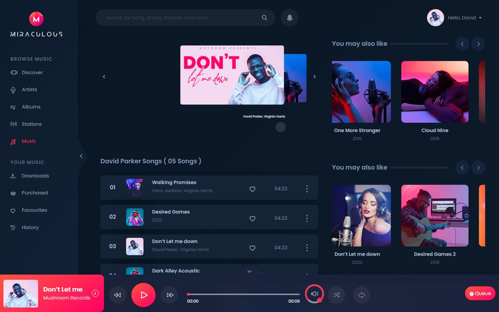
Pages
| Page | What it shows |
|---|---|
| index.html | Home page |
| album.html | Albums |
| artist.html, artist_single.html | Artist list and artist detail |
| music.html | Song list and detail |
| stations.html | Radio stations |
| download.html, purchase.html, favourite.html, history.html | User library |
Change the colours
Open assets/css/style.css and replace the values above. The gradient appears on buttons and the active menu item, so search for rgb(255,85,62) and rgb(255,0,101) and change both.
Songs and player
The player has 5 demo tracks, in assets/js/plugins/player/audio-player.js. The play icon in each song row plays the track at the same position in that list. See Use your own songs.
Version 4
New28 pagesA fresh layout named "Aurora Editorial": left sidebar, top navigation, a now-playing panel on the right and a player bar at the bottom. Plain JavaScript and Bootstrap 5.3.3, no jQuery and no plugin folder.
- Location
html/Bootstrap5/version4/(Bootstrap 5 only)- Open
index.html- Built with
- Bootstrap 5.3.3, Remix Icon 4.3, Inter and Playfair Display. Everything is included, no CDN is needed.
- Browsers
- Latest Chrome, Edge, Firefox and Safari (desktop and mobile). Internet Explorer is not supported.
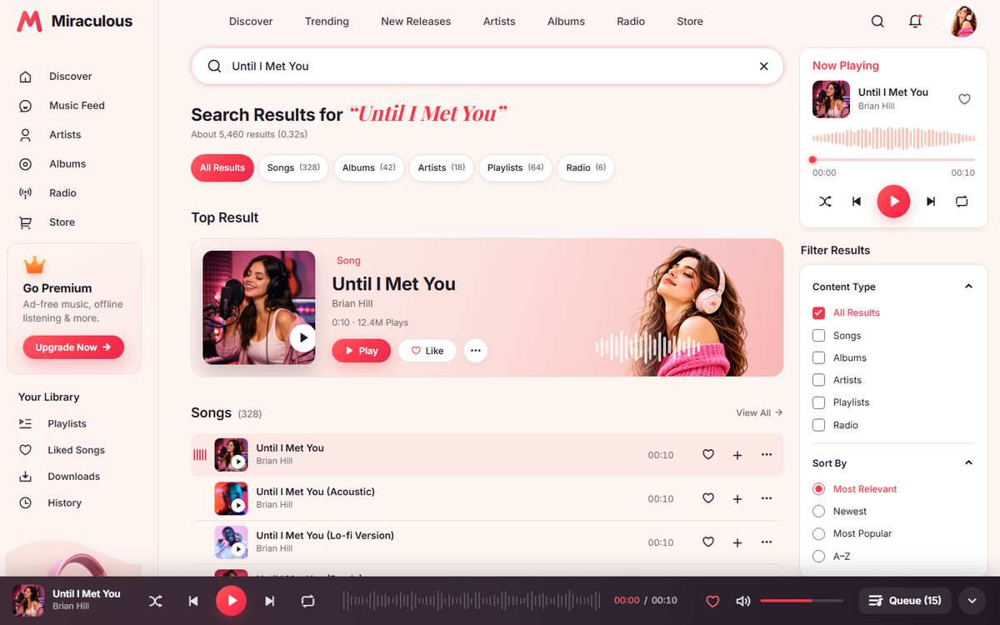
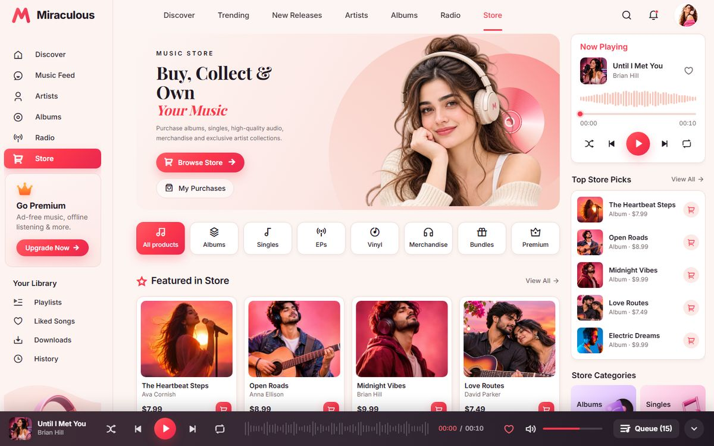
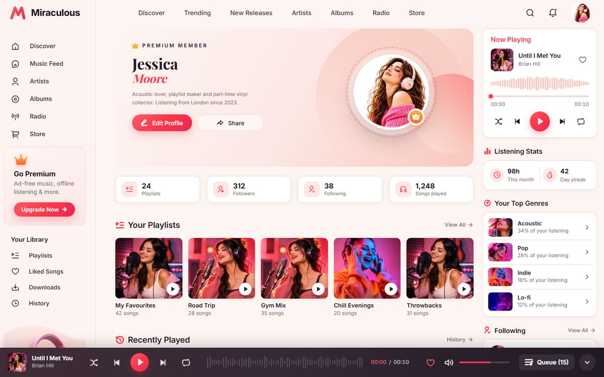
Features
- 28 HTML5 pages: Home, Music Feed (+ single), Artists (+ single), Albums (+ single), Playlists (+ create), Genres (+ single), Radio Stations (+ single), Store, Top Tracks, Free Music, Music, Search, Liked Songs, History, Downloads, Purchase, Profile, Manage Account, Upload, Blog (+ single), Log in / Sign up.
- A player that keeps playing while you move from page to page (it remembers the current song and time in the browser).
- Right panel with the current song and the queue, and a bottom-sheet player on mobile.
- Hero carousel, scrolling card carousels, filter chips, sort menu and "load more".
- Live search results page, like and cart buttons, toast messages, create-playlist form.
- Preloader ("Vinyl Drop") and an optional click effect.
- Fully responsive: desktop, laptop, tablet (slide-in menu) and mobile.
Files used
assets/
css/ bootstrap.min.css fonts.css remixicon.css style.css
js/ bootstrap.bundle.min.js main.js preloader.js
fonts/ Inter, Playfair Display and Remix Icon font files
images/ favicon.png and the small svg icons
audio/ song-01.mp3 ... song-05.mp3 (10 second demo clips)
README.txt third-party libraries and licencesHTML structure
<html lang="en" data-player-start="visible" data-preloader="once" data-click-fx>
<head>
<meta charset="utf-8">
<meta name="viewport" content="width=device-width, initial-scale=1">
<title>Miraculous - Online Music Store Html Template</title>
<link rel="icon" type="image/png" sizes="32x32" href="assets/images/favicon.png">
<link rel="stylesheet" href="assets/css/fonts.css">
<link rel="stylesheet" href="assets/css/bootstrap.min.css">
<link rel="stylesheet" href="assets/css/remixicon.css">
<link rel="stylesheet" href="assets/css/style.css">
</head>
...
<!-- before </body> -->
<script src="assets/js/bootstrap.bundle.min.js"></script>
<script src="assets/js/preloader.js"></script>
<script src="assets/js/main.js"></script>Change the colours
All main colours, fonts and sizes are CSS variables at the top of style.css (section "Design tokens"). Change them in one place:
:root {
--ms-bg: #FDF5F2; /* page background */
--ms-text: #211923; /* text */
--ms-coral: #FD374B; /* main accent colour */
--ms-coral-dark: #E92750;
--ms-font: 'Inter', sans-serif;
--ms-font-display: 'Playfair Display', serif;
--ms-sidebar-w: 228px;
}Page options (on the <html> tag)
data-preloader="once"shows the loading screen once per browser tab. Use"always"for every page load, or"off"to switch it off.data-player-start="visible"shows the player bar at start."on-play"shows it only after the first Play click.data-click-fxgives a small sound-wave effect when clicking an empty area. Remove it to switch it off, or usedata-click-fx="all"for every click.
CSS table of contents (style.css)
1. Design tokens / :root 11. Player & queue
2. Base 12. Right panel: now playing + queue
3. Buttons 13. Animations
4. Sidebar 14. Inner pages
5. Top navigation 15. Responsive
6. Hero 16. Responsive: inner pages
7. Sections & cards 17. Preloader
8. Genres, charts, artists 18. Preloader: "Vinyl Drop"
9. Premium & store 19. Hero in normal flow + late fixes
10. FooterSongs are described in Use your own songs.
Use your own songs
The package contains five short demo clips (10 seconds each) in the audio folder of every version. Replace them with your own .mp3 files and update the track list.
Versions 1, 2 and 3
Open audio-player.js (see the paths in Package folders: js/plugins/player/ in Bootstrap 4, assets/js/plugins/player/ in Bootstrap 5). Every song is one block in the list:
{
image : 'https://dummyimage.com/50x50', // small cover shown in the player
title: "Cro Magnon Man",
artist: "Mushroom Records",
mp3: "assets/audio/song-01.mp3", // Bootstrap 4 folder: "audio/song-01.mp3"
option : myPlayListOtion
}- Put your .mp3 files in the audio folder.
- Change
title,artist,imageandmp3of each block. Copy a block to add a song. - The play icon on a page plays the track at the same position in this list (first icon, first song, and so on; it starts again from the top after the last song). Keep your list in the order you want the icons to play.
Version 4
Put your .mp3 files in assets/audio and edit the TRACKS list at the top of assets/js/main.js (title, artist, cover, time and file). The number in data-play / data-track on a page points to a song in that list.
{ title: 'Walking Promises', artist: 'Ava Cornish', cover: 'https://dummyimage.com/600x600', time: '00:10', src: 'assets/audio/song-01.mp3' }Placeholder images
To keep the package small and free of third-party pictures, the covers, artists, banners, logos and profile photos in every version are placeholders from dummyimage.com. They need an internet connection to show. Replace the src of the image with your own file and keep the same size or ratio.
| Used for | Placeholder size |
|---|---|
| Album, radio, music and featured covers (V1, V2, V3) | 252 x 252 |
| Small cover in the player and song lists | 50 x 50 |
| Logo, header (V1, V2) | 78 x 78 |
| Logo, side panels and modals (V1, V2) | 126 x 97 |
| Register / login window picture | 368 x 395 |
| Version 4: logo, covers, artists, genres, banners, avatar | shown in the HTML, for example 150x72 for the logo and 600x600 for covers |
To find every placeholder, search the version folder for dummyimage.com. In Version 4 the cover paths inside the TRACKS list of main.js and the default avatar (AVATAR_DEFAULT) can be changed in the same way. Icons (svg) and the favicon are real files.
Bootstrap 4 or 5?
Choose Bootstrap 4 if
- your site already runs on Bootstrap 4,
- you want Version 1 or Version 2 in a Bootstrap 4 project.
Bootstrap 4 pages use data-toggle, data-target and data-dismiss on buttons and modals.
Choose Bootstrap 5 if
- you start a new project (recommended),
- you want Version 3 or Version 4.
Bootstrap 5 pages use data-bs-toggle, data-bs-target and data-bs-dismiss.
Do not mix them. If you copy a part of a page from one folder to the other, change these attributes too, otherwise modals and menus will not open.
Troubleshooting
The song does not play
- Check that the file named in the track list exists in the audio folder, with the same spelling and capital letters.
- Use .mp3 files. Other formats are not listed in the player.
- Browsers do not start music by themselves. Press the play button once.
- Press F12 and open the Console to see a "404" message if a file is missing.
The pictures do not show
The demo pictures are loaded from dummyimage.com and need an internet connection. Replace them with your own images, see Placeholder images.
A pop-up window or a menu does not open
Check that the page uses the attributes of its Bootstrap version (see Bootstrap 4 or 5?) and that the Bootstrap script is still loaded at the end of the page.
Version 4: the page looks empty for a moment
This is the loading screen and the fade-in of the sections. Set data-preloader="off" on the <html> tag to remove the loading screen.
Do I need to upload every version?
No. Upload only the version folder you use. Each version is complete on its own.
Change log
26 November 2026 Update
New
- Version 4 added: new design, Bootstrap 5.3.3, 28 pages, no jQuery, a player that continues between pages.
- This documentation was rewritten with a section for every version.
Package
- Bootstrap 4 folder now has Versions 1 and 2. The old Version 3 was removed from it because it was built on Bootstrap 5. It is available in the Bootstrap 5 folder.
- Placeholder images are used instead of photos.
Versions 1 and 2 (Bootstrap 4 and 5)
- Music player fixed: songs play from the included audio folder instead of an old online address that no longer worked.
- The play icon of every song now starts the player.
- Volume knob fixed: it no longer jumps from full volume to mute when dragged past the end.
- Bootstrap 5 folder: pop-ups and menus use the Bootstrap 5 attributes.
- All images have a description (
alttext). - Fixed empty links in the profile menu (Setting, Logout) and a wrong link on the Save playlist button.
- Images that were missing from the package now show placeholders.
Version 3
- Music player fixed: five included demo tracks, play icons and the volume knob work.
- Pop-ups and menus use the Bootstrap 5 attributes.
- Wrong links, empty image descriptions and missing images fixed.
Version 4
- Checked page by page: no broken links, no missing files and all images have descriptions.
4 August 2018 Release
First release with Versions 1, 2 and 3.
Sources and credits
I am happy to credit the following. Licences belong to their owners.
| Name | Used in | Licence |
|---|---|---|
| Bootstrap | All versions (4.1, 5.1, 5.3.3) | MIT |
| jQuery 3.6 | Versions 1, 2, 3 | MIT |
| jPlayer 2.9.2 | Versions 1, 2, 3 (music player) | MIT |
| Swiper 4.2 | Versions 1, 2, 3 (sliders) | MIT |
| jQuery Nice Select | Versions 1, 2, 3 | MIT |
| jQuery Custom Scrollbar | Versions 1, 2, 3 | MIT |
| Font Awesome 4.7 | Versions 1, 2, 3 (icons) | Font: SIL OFL 1.1, CSS: MIT |
| Remix Icon 4.3 | Version 4 (icons) | Apache 2.0 |
| Google Fonts: Josefin Sans, Poppins, Inter, Playfair Display | Versions 1 / 2, 3, 4 | SIL OFL 1.1 |
| SampleLib and Pixabay | 10 second demo audio clips | Free to use |
| dummyimage.com | Placeholder images in all versions | Online service |
Support
Ask a question
Email: support@pixelnx.com
Support desk: support.pixelnx.com (create an account, then open a ticket).
Before you write
- Name the version and the Bootstrap folder you use.
- Tell us the page name and what you see.
- Add a screenshot or the console message (F12), if you can.
Support covers questions about how the template works and problems with its files. Custom changes and help with installing on your server are not part of item support (see the Envato Item Support Policy).
If you like this template, please rate it on your Downloads page. Thank you so much!